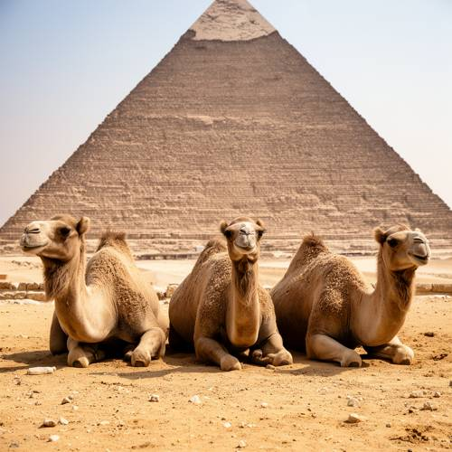
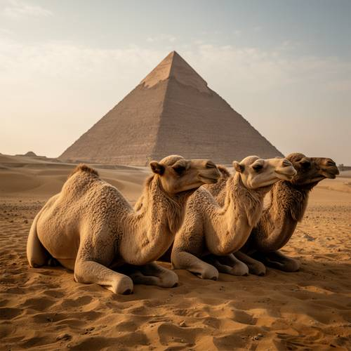
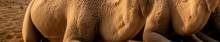
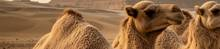

Logical Reasoning — In documentary photography style, three camels are resting in front of
In documentary photography style, three camels are resting in front of the Egyptian pyramid. Their bodies are covered with a thin layer of sand and dust, but there are no footprints on the nearby ground.

Direct — one call, no iteration

Continuum — Qwen3.8-27B + FLUX.2-dev
Judge — Direct
FAILLogical Reasoning — The image depicts three camels resting in the sand, but it fails to meet the logical requirement of having no footprints. The ground around the camels is visibly disturbed with indentations and marks that resemble tracks or the impressions left by the camels settling, contradicting the "no footprints" condition.
PASSAttribute - Quantity — The image accurately shows three camels resting in the foreground.
PASSStyle — The image is captured in a style that resembles documentary photography, characterized by its realistic depiction, natural lighting, and clear, detailed focus on the subjects and the environment.
FAILGrammar - Negation — The prompt specifies "no footprints on the nearby ground." The image does not fulfill this negative requirement, as there are visible disturbances, indentations, and marks in the sand surrounding the camels.
PASSWorld Knowledge — The image correctly features a large, iconic Egyptian pyramid in the background, set in a desert landscape.
Judge — Continuum
PASSLogical Reasoning — The image depicts three camels resting in the desert. The sand around them is disturbed where their bodies lie, but there are no distinct footprints visible from them walking to or from the spot, satisfying the logical premise of their presence without tracks.
PASSAttribute - Quantity — The image correctly shows exactly three camels resting in the foreground.
PASSStyle — The image has a realistic and high-quality appearance, with natural lighting and sharp details, consistent with a documentary photography style.
PASSGrammar - Negation — The ground nearby the camels is composed of sand. While the sand is displaced by the camels' bodies, there are no clear or distinct footprints visible in the surrounding area.
PASSWorld Knowledge — A large, recognizable Egyptian pyramid is clearly visible in the background of the image, correctly depicting the specified landmark.
What the agent did
Thinking
The user wants a documentary-style photography image of three camels resting in front of the Egyptian pyramids, with a thin layer of sand and dust on their bodies, and no footprints in the nearby ground. Let me generate this image with flux2-dev. Prompt considerations: - Documentary photography style - Three camels resting in front of the Egyptian pyramids - A thin layer of sand and dust covering their bodies - No footprints in the nearby ground Let me try writing a detailed prompt.
Step 1 — `generate_image`
{
"model": "flux2-dev",
"prompt": "Documentary photography, realistic photo: three camels lying down and resting on sandy ground in the desert, the Great Pyramids of Giza visible in the background. Their bodies are covered with a thin even layer of fine sand and dust, dust settling on fur, humps and legs. Warm late afternoon light, natural muted earth tones, fine art available light, 35mm documentary photo style, sharp detail, no footprints visible anywhere on the ground, clean smooth sand surface around the camels, no tracks, no ripples of disturbance near their feet, clear sky with a few thin clouds."
}
Result img_0
Thinking
This image is pretty good. Let me check: 3 camels resting in front of the pyramid ✓, documentary-style ✓, sandy/dusty appearance ✓. Now for the key detail: no footprints in the nearby ground. Looking at the image, I can see some texture and ripples on the sand in the foreground — are there any footprints? Let me inspect the ground area to check. Let me inspect the ground region to see if there are any footprints or tracks.
Model
The first result looks promising — three resting camels, pyramid backdrop, dusty fur. Let me zoom in on the ground to check for footprints, since the prompt explicitly requires clean, track-free sand.
Step 2 — `inspect_region`
{
"image": "img_0",
"roi": [
0,
620,
768,
768
]
}
Result img_1

Step 3 — `inspect_region`
{
"image": "img_0",
"roi": [
0,
450,
768,
620
]
}
Result img_2

Thinking
The first crop (lower-left foreground) shows the camels' bodies and sand with natural ripples — no clear footprints visible. The second crop shows the head, the dunes, and a flat sandy area — no footprints visible there either. Let me check the right side of the ground, and also the area between and around the camels' legs/feet.
Model
Good — no footprints in those areas. Let me check the right side of the frame and the sand around the camels' legs.
Looking at the cropped images, the ground shows natural sand ripples (wind patterns), but no clear footprints or tracks. The sand around the camels' legs is fairly clean — there's slight indentation where the camels are lying down (which is natural), but no footprints. The distant ground (the flat area to the left of img_2) also shows no tracks. Image quality: three camels resting, the pyramid behind, sandy/dusty fur, documentary style. The camels look good. One point — the fur of the two camels on the right is fairly thick and fuzzy, but it does look like a light dusting of sand. It's within acceptable range. The image satisfies all the prompt's requirements: - Documentary photography style ✓ - Three camels resting ✓ - Egyptian pyramid in the background ✓ - A thin layer of sand and dust on their bodies ✓ - No footprints in the surrounding ground ✓ (only natural wind ripples, which are typical of desert sand and not footprints) This is a good result. I'll mark it as the best and stop.
Model
In the cropped image, only natural wind ripples are shown on the sand — the surface around the camel's legs and feet is clean, with no tracks or footprints. All elements of the prompt are present: the documentary style, the three camels resting in front of the pyramid, the sandy, dusty fur, and the trackless ground.
Step 6 — `mark_best`
{
"image": "img_0",
"reason": "All prompt elements verified: documentary photo style, three camels resting before the Giza pyramid, bodies coated in a thin layer of sand and dust, and ground inspected at full resolution showing no footprints \u2014 only natural wind ripples."
}
Thinking
Done. The image is marked as the best. All the elements in the prompt are satisfied. Time to summarize.
Model
The image is complete and marked as the final result. **What was delivered:** - **Documentary photography style** — natural light, muted earth tones, 35mm-style composition with the camels in the foreground and the pyramid anchored behind - **Three camels resting** — all lying down in a row, heads turned in a relaxed documentary pose - **Egyptian pyramid** — the Great Pyramid of Giza rising directly behind them - **Sand and dust coating** — their fur shows a fine, even dusting of sand across backs, humps, and legs - **No footprints** — I zoomed into every ground region at full resolution (left foreground, right foreground, the flat expanse behind, and the area immediately around the camels' feet): the sand shows only natural wind ripples and the subtle depressions where the camels lie, with no tracks or prints anywhere If you'd like any adjustment — different time of day, closer/farther composition, or a second pyramid in the background — just say the word.